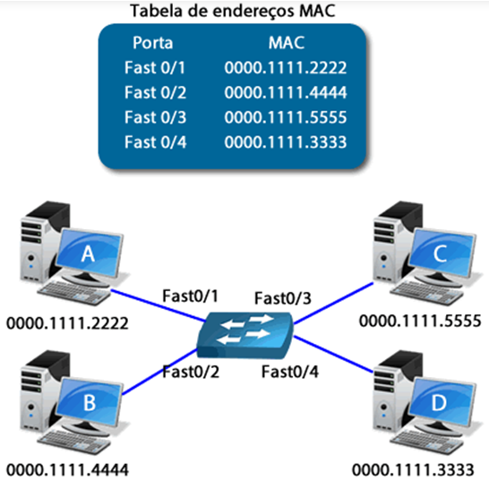
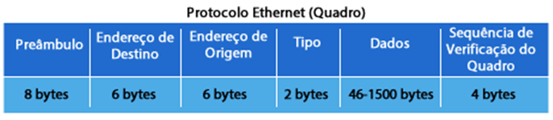
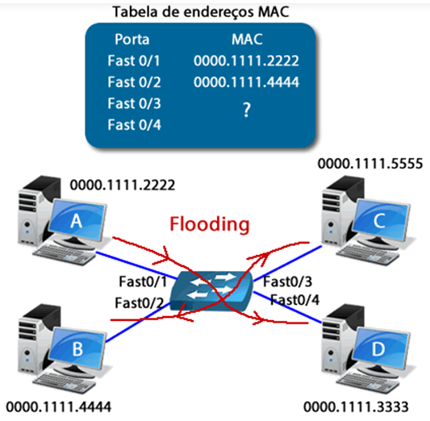
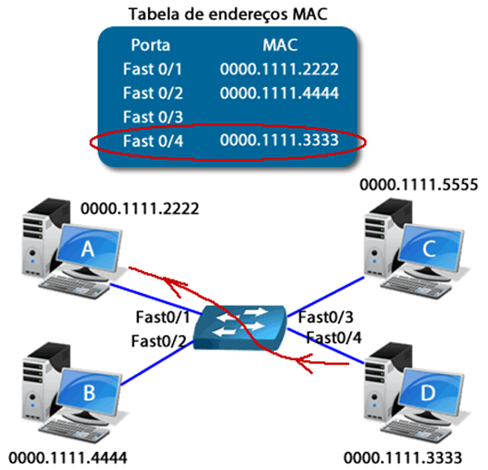

◉ Configurações básicas do switch
Configurando um nome
Switch>enable
Switch#configure terminal
Switch(config)#hostname ti-redes
ti-redes#
Configurando senha enable
Switch>enable
Switch#configure terminal
Switch(config)#enable password ti-redes
Configurando senha enable secret
Router>enable
Router#configure terminal
Router(config)#enable secret ti-redes
Configurando senha da console
Router>enable
Router#configure terminal
Router(config)#line console 0
Router(config-line)#password ti-redes
Configurando acesso telnet para 05 usuários-
Switch>enable
Switch#configure terminal
Switch(config)#line vty 0 4
Switch(config-line)#login
Switch(config-line)#password ti-redes
Configurando o endereço IP do switch-
Switch>enable
Switch#configure terminal
Switch(config)#interface vlan 1
Switch(config-if)#ip address 1.0.0.1 255.255.255.0
Switch(config-if)#no shutdown
Configurando o gateway do switch
Switch>enable
Switch#configure terminal
Switch(config)#ip default-gateway 1.0.0.2
Configurando vlan no switch
Switch>enable
Switch#configure terminal
Switch(config)#vlan 10
Switch(config-vlan)#name dep-administrativo
Switch(config-vlan)#exit
Switch(config)#
Switch(config)#interface fastEthernet 0/1
Switch(config-if)#switchport mode access
Switch(config-if)#switchport access vlan 10
Switch(config-if)#exit
Switch(config)#exit
Switch#sh vlan
Configurando trunk no switch
Switch>enable
Switch#configure terminal
Switch(config)#interface fastEthernet 0/1
Switch(config-if)#switchport mode trunk
Comandos de verificação e diagnóstico-
Switch#show ?
(O comando show ? fornece uma lista dos comandos show disponíveis)
Switch#show arp
(Exibe a tabela ARP do roteador)
Switch#sh interfaces
(Verifica detalhadamente as configurações das interfaces)
Switch #sh ip interface brief
(Verifica as configurações das interfaces)
Switch#show mac-address-table dynamic
(Verifica a tabela de endereçamento MAC)
Switch#show vlan
(Exibe as vlans configuradas)
Switch #sh running-config
(Verifica as configirações ativas na RAM)
Switch#sh startup-config
(Verifica as configurações da NVRAM)
Switch#sh flash:
(Verifica os arquivos de sistema operacional da Flash)
Switch#copy running-config startup-config
(Salva as configurações ativas na RAM para a NVRAM)
◉ Como um Switch Monta sua Tabela de Endereços MAC
Um switch deve aprender os endereços MAC dos computadores conectados às suas portas e montar uma tabela de encaminhamento,
possibilitando a criação de diversos caminhos virtuais livres de colisão entre esses computadores.
Veja a figura a seguir, onde temos os computadores A, B, C e D conectados às portas fast 0/1 até a fast 0/4 respectivamente a um switch.
Ao longo do tempo, com a comunicação entre os computadores, o switch aprende através dos endereços MAC de origem enviados pelos
computadores, o MAC de cada um deles e vincula esse MAC com a porta que recebeu esse quadro ethernet.

Na próxima figura temos o quadro ethernet para você relembrar dos campos que o switch utiliza para o aprendizado de endereços
(MAC de origem), para o encaminhamento dos quadros (MAC destino) e verificação de erros.

Até o momento supomos que o switch já conhecesse todos os MACs conectados às suas portas. Mas o que acontece se o switch não conhecer
ainda todos os MACs que estão conectados às suas portas e um computador enviar um quadro para esse MAC desconhecido?
Como o switch não sabe para onde enviar ele envia uma cópia desse quadro para todas as suas portas, menos para àquela que enviou o quadro.
Assim, com certeza o computador de destino irá receber esse quadro e responder a essa requisição.
Quando isso ocorrer o switch irá inserir uma nova entrada em sua tabela de endereços MAC, adicionando em sua tabela uma entrada com o
endereço do micro que antes era desconhecido e que agora passa a ser conhecido. Lembre-se que esse processo é chamado de flooding.
Acompanhe na figura seguinte uma ilustração do processo de flooding onde o computador A envia um quadro para o computador C, o qual ainda
não era conhecido pelo switch.
Note que quando o switch recebe esse quadro ele constata que não conhece aquele MAC e envia uma cópia do quadro para todas as portas
(flooding), menos para a porta do computador A.

Quando o computador C recebe o quadro ele responde e o switch vincula seu MAC de origem com a porta fast 0/3.
Apesar dos computadores B e D receberem o mesmo quadro eles comparam internamente o MAC de destino com seus MACs gravados na
placa de rede e verificam que aquele quadro não é para eles, portanto o quadro é descartado por B e D.

Não confunda o flooding com o ARP, o ARP é uma ferramenta de camada 3 e utilizada para descobrir um MAC que está vinculado a um endereço
IP que é conhecido. Aqui no flooding não entramos na camada 3, pois o switch faz somente uma cópia simples do quadro para todas as portas.
O flooding pode ser traduzido para o português por algumas bibliografias como “inundação de quadros”.
Com isso aprendemos como os switches aprendem endereços MAC e fazem o encaminhamento dos quadros de Unicast, ou seja, comunicação direta
entre dois dispositivos.
Mas e se um computador enviar um quadro com um endereço de broadcast como destino? Ou seja, com o endereço MAC ffff.ffff.ffff no campo
de MAC de destino do quadro ethernet?
Lembrem-se que um switch é um dispositivo de camada 2, por isso ele irá encaminhar o broadcast para todas as portas menos para a porta de
onde ele recebeu o quadro.
Por exemplo, considerando a figura 4 se o micro A envia um broadcast que portas irão receber esse quadro? Serão as portas fast 0/2, fast 0/3
e fast 0/4. Portanto o switch consegue segmentar domínios de colisão, porém não segmenta domínios de broadcast.
Podemos também dizer que os pacotes com MAC de destino apontando para um endereço de broadcast passam por um processo idêntico ao de flooding,
pois o switch inunda todas as portas com esse quadro.
O mesmo ocorre com um quadro de Multicast, ou seja, os quadros de comunicações multicast recebem um endereço MAC especial iniciado em 0100.5E
(com uma faixa de 0100.5e00.0000 até 0100.5e7f.ffff) e são encaminhados para todas as portas do switch, menos para a porta que enviou o
quadro, assim como o broadcast.
Os endereços de broadcast e multicast não são guardados na tabela de endereços MAC do switch, eles sempre são tratados como endereços não
conhecidos e sofrem o processo de flooding.